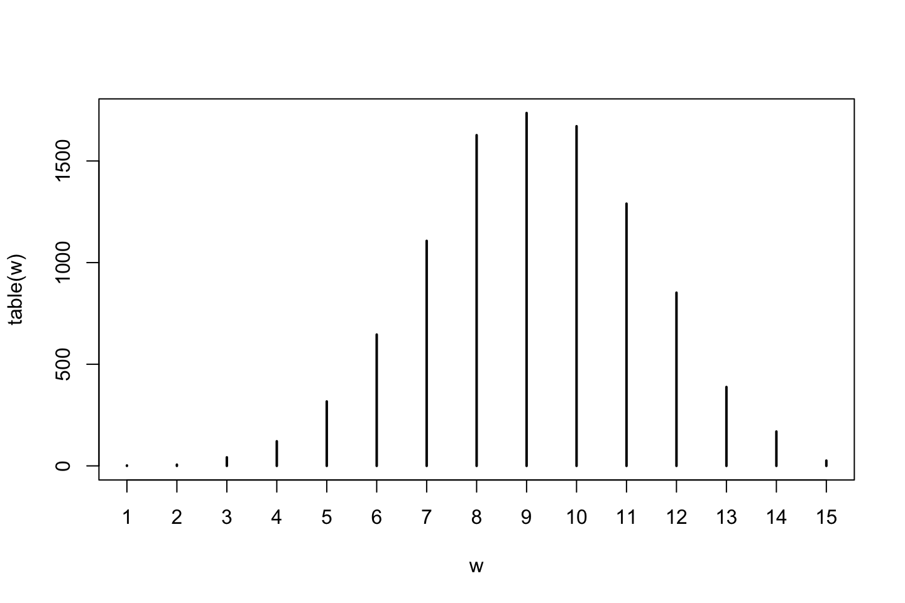
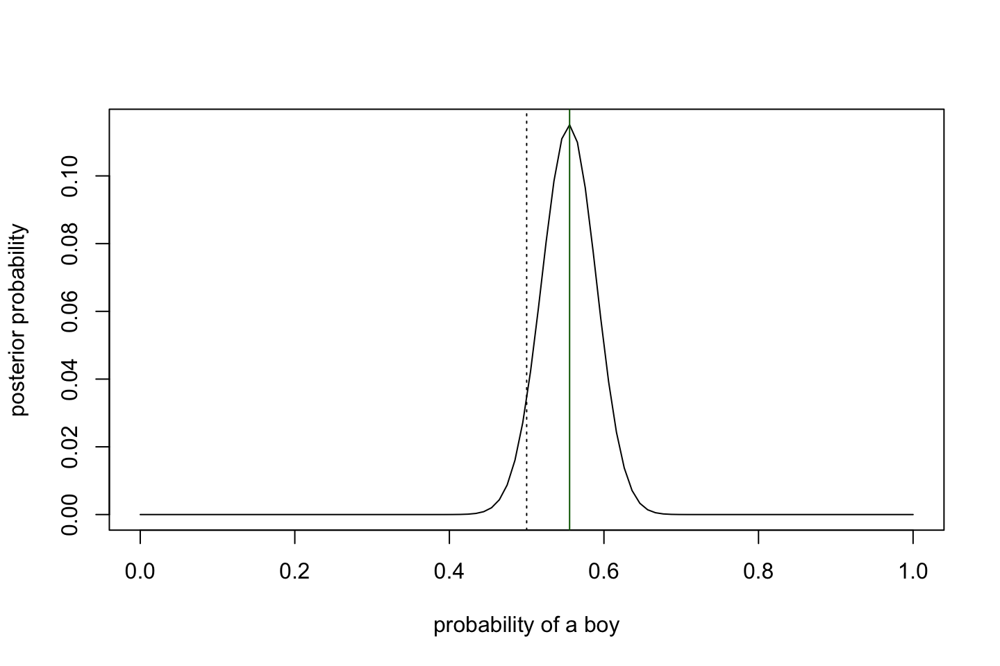
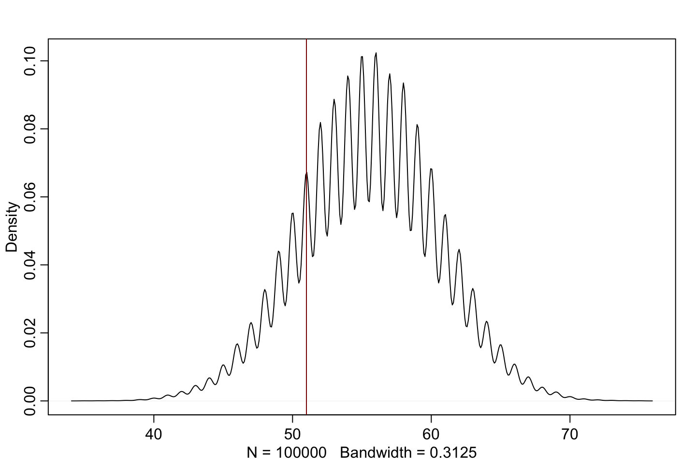
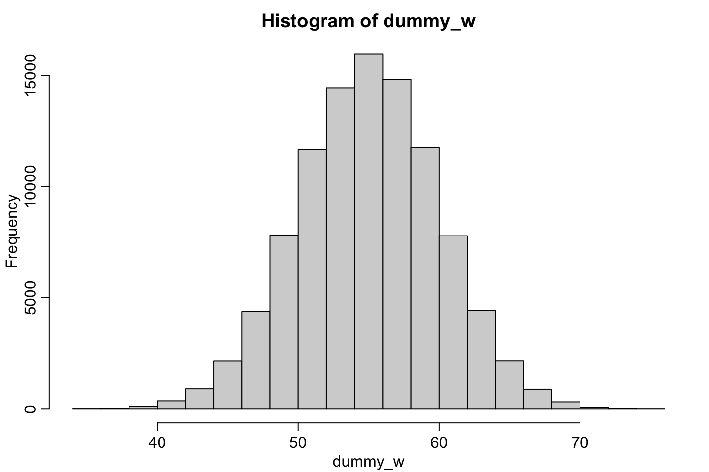
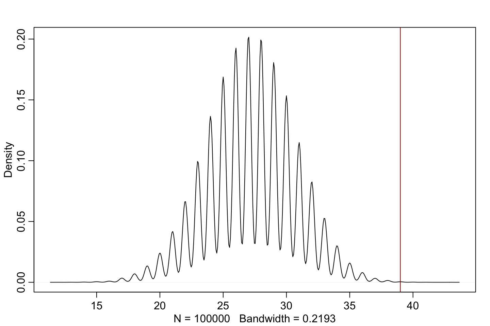
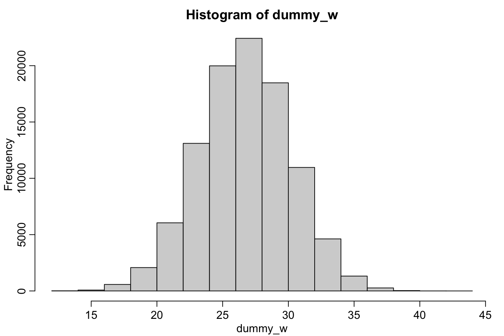

3 Chapter 3 - Sampling the Imaginary
They take the following example:

We see that this is the equation for a person being vampire given that the test i positive. This is calculated by using Bayes Theorem. This can be written in code in the following:
#3.1
Pr_Positive_Vampire <- 0.95 #Condiational prob for positive given vampire
Pr_Positive_Mortal <- 0.01 #Essentially the false positive rate
Pr_Vampire <- 0.001 #Prior for being vampire
Pr_Positive <- Pr_Positive_Vampire * Pr_Vampire + Pr_Positive_Mortal * (1 - Pr_Vampire)
(Pr_Vampire_Positive <- Pr_Positive_Vampire*Pr_Vampire / Pr_Positive)## [1] 0.08683729We see that given the test being positive, there is an 8.6% chance of being vampire compared to the default 0.001. So we see that even though the test has 95% percent correctness there is in fact still only less than 10% chance that you are a vampire given the positive test.
We see that the actual true rate is dependent on how many in the population that are actual vampires.
A more intuitive way of writing out this can be shown as:

Leading to:

The Aim of the following section is to build an intuition around the approximation techniques. We see that in the example it is very simple hence one would not necessarily need the approximation techniques. Although it is suggested to start using the fitting techniques early as one will use them as soon as the problem gets just a bit more complex.
3.1 Sampling from a grid-approximate posterior
Lets take an example. We are going to take 10.000 samples
p_grid <- seq(from=0,to=1,length.out=1000 )
prob_p <- rep(1,1000) #This is the prior. It is flat = stupid prior
prob_data <- dbinom(6,size=9,prob=p_grid)
posterior <- prob_data * prob_p
posterior <- posterior / sum(posterior) #sum(posterior) = average likelihood
print("First 10 posteriors")
posterior[1:10]
par(mfrow = c(2,2))
plot(p_grid,main = "p_grid") #The grid
plot(prob_p,main = "prob_p (prior)") #Prior
plot(prob_data,main = "prob_data (likelihood)") #likelihood
plot(posterior,main = "posterior") #Posterior
## [1] "First 10 posteriors"
## [1] 0.000000e+00 8.433659e-19 5.381333e-17 6.111249e-16 3.423368e-15
## [6] 1.301978e-14 3.875963e-14 9.744233e-14 2.164638e-13 4.375070e-13Notice that the p_grid is flat. Hence the
Now lets sample from the prior distribution.
#Code 3.3
set.seed(1337)
samples <- sample(p_grid
,prob=posterior
,size=10000 #The higher the number the smoother the curve
,replace=TRUE )
#Code 3.4
par(mfrow = c(2,1))
plot(samples)
library(rethinking)
dens(samples)
We see that the densitity plot shows the estimated probability of water on the globe.
What we have seen so far: we are replicating the posterior probability of water based on the data we have at hand. This is not of much value. We are next going to use the samples to understand the posterior.
3.2 Sampling to summarize
Now we see that the models work is done. Although now it is up to the analyst to interprete the posterior distribution.
This includes:
- How much posterior probability lies below some parameter value?
- How much posterior probability lies between two parameter values?
- Which parameter value marks the lower 5% of the posterior probability?
- Which range of parameter values contains 90% of the posterior probability?
- Which parameter value has highest posterior probability?
This is essentially about three things: 1) defined boundaries, 2) defined probability mass, 3) point estimates. The following sections describe these.
3.2.1 Defined Boundaries
This
options(scipen = 0)
# add up posterior probability where p < 0.5
head(p_grid)
sum(posterior[p_grid < 0.5]) #Sum all posteriors where the p_grid is < 50%## [1] 0.000000000 0.001001001 0.002002002 0.003003003 0.004004004 0.005005005
## [1] 0.1718746We see that the sum of the first 10 probabilities, as these are below.
3.2.2 Defined Probability Mass
This is about finding an interval and interpreting this. For example, we want to know the region between the 10% and 90% quantiles, or the first 80%.
This can be solved by doing:
#R Code 3.9
quantile(samples,0.8) #Boundaries of lower 80% posterior probability, thus it starts at 0
#R Code 3.10
quantile(samples,c(0.1,0.9)) #Or between 10% and 90% posterior probability. hence midle 80% posterior probability## 80%
## 0.7607608
## 10% 90%
## 0.4484484 0.8119119These we call percentile intervals (PI). For this there is functionality in the rethinkinglibrary.
PI(samples,prob = 0.5)## 25% 75%
## 0.5415415 0.7377377We see that this will autoamtically find the center probability of the posterior distribution. This may not be convenient if for instance the peak is outside of the region that PI return.
Therefore we have the functio HPDI, which stands for highest posterior density interval. This will find the densest probability mass.
This is justified, as you can end up with the same probability mass region with many combinations, hence HPDI is merely helping with this procedure.
HPDI(samples,prob = 0.5)## |0.5 0.5|
## 0.5475475 0.7417417Now we see that it finds a more narrow region aggregating to the same probability. The following also exemplify this:

Many will confuse this with a confidence interval, while they will be named compatibility or credible intervals so they are not mixed up.
Criticism of traditional confidence intervals. One sees that a common interpretation of confidence intervals is that with a CI of 95%, means that there is a 95% probability of the true value lying within the interval. THIS IS WRONG, that is a Bayesian interpretation and can only be used in a Bayesian setting. This is actually about what if you repeat an experiment, then 95% of the computed intervals will include the ‘true’ value. See page 58.
Criticims of ‘true’ values. Remember that you are working in a small world and thus true answers can never really be found, these belong in the large world.
3.2.3 Point Estimates
Point estimates are the third and final common summary task for the posterior distribution.
Often this is not wanted, as point estimates will remove valuable information. In general, never use point estimates if you can avoid it, basyesian data analysis is basically about defining the probabilities of outcomes, and these are best dsecribed by distributions and not point estimates
Arguments against point estimates. 1) They only return one number, that does not tell anything about how they adjacent regions look, 2) We have no idea how the tails look and so on.
Although, if you have to provide point estimates these are examples of getting them:
par(mfrow = c(1,1))
plot(x = p_grid,y = posterior,type = 'l',main = "Posterior distribution",sub = "Showing different point estimates")
grid()
abline(v = p_grid[ which.max(posterior) ],col = "darkblue")
abline(v = chainmode( samples , adj=0.01 ),col = "darkgreen")
abline(v = mean( samples ),col = "darkred")
abline(v = median( samples ),col = "darkorange")
legend("topleft",legend = c("max posteriori","mode","mean","median"),lty = 1,col = c("darkblue","darkgreen","darkred","darkorange"))
#R Code 3.14 to 3.16
p_grid[ which.max(posterior) ]
chainmode( samples , adj=0.01 ) #The mode: i.e., the most often appearing value
mean( samples )
median( samples )## [1] 0.6666667
## [1] 0.6830388
## [1] 0.6359439
## [1] 0.6446446The question is then: what point estimate to use?
We can apply a loss function to support the decision. We can find a series of loss given the grid and the loss function.
loss <- sapply(X = p_grid
,FUN = function(d) sum(posterior * abs(d-p_grid)))And for one specific point estimate:
sum(posterior * abs(0.5 - p_grid)) #0.1640626## [1] 0.1640626To find the point estimate with the lowest loss one can say:
p_grid[which.min(loss)] #0.6446446, equal to the median## [1] 0.6446446There are naturally also other loss functions, e.g., \((d-p)^2\), which would lead to the posterio mean.
3.3 Sampling to simulate prediction
We can sample data to simulate the observations from the model. It has the following advantages:
- Model Design: One can sample from the prior and see what one expects. This we will look more into in a later section.
- Model Checking: To see if you end up with the same model.
- Software Validation: One can use it to simulate the data that the models was built on. To check if the model can replicate the underlying data. I guess this is to check if something is broken.
- Research Design:
- Forecasting: One can simulate what will happen in the future.
The following is an overview of how to simulate observations and make model checks:
3.3.1 Dummy Data
This is basically drawing data given a certain probability of the different outcomes.
One must remember that the outputs of such are small world numbers.
The folo
dummy_w <- rbinom(n = 100000 #No of observations
,size=9 #Size of each set
,prob=0.7) #70% water
simplehist( dummy_w , xlab="dummy water count" )
We see that we get mostly combinations with 6 or 7 water.
3.3.2 Model Checking
This has two purposes:
- Ensure that the model fit worked correctly
- Evaluate the adequacy of a model for some purpose
Did the software work?
This is basically just to check if you have set it up correctly.
Is the model adequate?
There are no true models, hence you need to assess where the model fails to describe the data.
One also experience that models tend to be overconfident.
One wants to sample from the distribution to see if the model can be replicated. If we end up seeing very different results, then one should start considering is somthing is not taken into account.
3.4 Exercises
3.4.1 3M1
Suppose the globe tossing data had turned out to be 8 water in 15 tosses. Construct the posterior distribution, using grid approximation. Use the same flat prior as before.
length = 100
# define grid
p_grid <- seq(from=0 , to=1 , length.out = length)
# define prior
prior <- rep(1, length) #The flat (stupid) prior
# compute likelihood at each value in grid
likelihood <- dbinom(x = 8 #Successes, water in this example
,size = 15 #No. of tosses
,prob = p_grid )
# compute product of likelihood and prior
unstd.posterior <- likelihood * prior
# standardize the posterior, so it sums to 1
posterior <- unstd.posterior / sum(unstd.posterior)
#Plotting
par(mfrow = c(2,1))
plot(prior,type = 'l',main = "Prior")
plot(p_grid
,posterior
,type="l"
,xlab="probability of water"
,ylab="posterior probability"
,main = "Posterior distribution"
,sub = paste(length," points")
)
abline(v = p_grid[which.max(posterior)],col = "darkred",lty = 2)
mtext(paste("Max =",round(p_grid[which.max(posterior)],2)))
We see that the posterior distribution is now centered almost around 50%, as we almost in every second case see water.
3.4.2 3M2
Draw 10,000 samples from the grid approximation from above. Then use the samples to calculate the 90% HPDI for p.
First we draw 10.000 samples and then we can calculate the HDPI (higest posterior density interval)
library(rethinking)
samples <- sample(p_grid,size=10000,replace=TRUE,prob=posterior)
hdpi <- rethinking::HPDI(samples,prob = 0.9)
par(mfrow = c(1,1))
plot(p_grid
,posterior
,type="l"
,xlab="probability of water"
,ylab="posterior probability"
,main = "Posterior distribution"
,sub = paste(length," points")
)
abline(v = hdpi[1],lty = 2)
abline(v = hdpi[2],lty = 2)
mtext(paste("Max =",round(p_grid[which.max(posterior)],2)))
3.4.3 3M3
Construct a posterior predictive check for this model and data. This means simulate the distribution of samples, averaging over the posterior uncertainty in p. What is the probability of observing 8 water in 15 tosses?
Posterior predictive check = to inspect the posterior and see if it actually makes sense.
par(mfrow = c(1,2))
plot(samples)
dens(samples)
mean(samples)## [1] 0.5292899dbinom(x = 8,size = 15,prob = mean(samples))## [1] 0.202942We see that there is a 0.2 probability that you select 8 water in a total of 15 tosses.
3.4.4 3M4
Using the posterior distribution constructed from the new (8/15) data, now calculate the probability of observing 6 water in 9 tosses.
dbinom(x = 6,size = 9,prob = mean(samples))## [1] 0.19262We see a 0.19 probability of getting 6 water in a total of 9 tosses.
3.4.5 3M5
Start over at 3M1, but now use a prior that is zero below p = 0.5 and a constant above p = 0.5. This corresponds to prior information that a majority of the Earth’s surface is water. Repeat each problem above and compare the inferences. What difference does the better prior make? If it helps, compare inferences (using both priors) to the true value p = 0.7.
length = 100
# define grid
p_grid <- seq(from=0 , to=1 , length.out = length)
# define prior
prior <- c(rep(0,length/2),rep(1,length/2))
# compute likelihood at each value in grid
likelihood <- dbinom(x = 8 #Successes, water in this example
,size = 15 #No. of tosses
,prob = p_grid )
# compute product of likelihood and prior
unstd.posterior <- likelihood * prior
# standardize the posterior, so it sums to 1
posterior <- unstd.posterior / sum(unstd.posterior)
#Plotting
par(mfrow = c(2,1))
plot(prior,type = 'l',main = "Prior")
plot(p_grid
,posterior
,type="l"
,xlab="probability of water"
,ylab="posterior probability"
,main = "Posterior distribution"
,sub = paste(length," points")
)
abline(v = p_grid[which.max(posterior)],col = "darkred",lty = 2)
mtext(paste("Max =",round(p_grid[which.max(posterior)],2)))
#Calculating HDPI
samples <- sample(p_grid,size=10000,replace=TRUE,prob=posterior)
hdpi <- rethinking::HPDI(samples,prob = 0.9)
abline(v = hdpi[1],lty = 2,col = "darkblue")
abline(v = hdpi[2],lty = 2,col = "darkblue")
Now we would see that the probability of drawing water is relatively higher than what we have seen before. Although that does not mean that one cannot draw land and there is also a chance of drawing only land.
Calculating probability of different outcomes
dbinom(x = 8,size = 15,prob = mean(samples))## [1] 0.1711683We see that this went from a bit above 20% to almost 17%
The following scenario increased.
dbinom(x = 6,size = 9,prob = mean(samples))## [1] 0.2554195We see that it is higher now, we went from 0.19 to 0.25.
We see that the scenario of getting relatively more water is higher.
Now we can also re-simulate the posteriors predictive distributions.
library(rethinking)
w <- rbinom(10000,size = 15,prob = samples)
par(mfrow = c(1,1))
plot(table(w))
Notice that the most frequent is 9 and not 8 as we have seen earlier.
3.4.6 3H1
Using grid approximation, compute the posterior distribution for the probability of a birth being a boy. Assume a uniform prior probability. Which parameter value maximizes the posterior probability?
1 = Male, 0 = Female. Ande birth 1 and 2 are two different datasets.
library(rethinking)
data(homeworkch3)
sum(birth1) + sum(birth2)## [1] 111This means that there are 111 boys in the two datasets.
length = 100
# define grid
p_grid <- seq( from=0 , to=1 , length.out = length )
# define prior
prior <- rep( 1 , length )
# compute likelihood at each value in grid
likelihood <- dbinom(111 ,size=200 ,prob=p_grid )
# compute product of likelihood and prior
unstd.posterior <- likelihood * prior
# standardize the posterior, so it sums to 1
posterior <- unstd.posterior / sum(unstd.posterior)
#Plotting
plot(prior,type = 'l')
plot(p_grid
,posterior
,type="l"
,xlab="probability of a boy"
,ylab="posterior probability" )
abline(v = 0.5,lty = 9)
abline(v = p_grid[which.max(posterior)],col = 'darkgreen')
3.4.7 3H2
Using the sample function, draw 10,000 random parameter values from the posterior distribution you calculated above. Use these samples to estimate the 50%, 89%, and 97% highest posterior density intervals.
samples <- sample(p_grid,size=10000,replace=TRUE,prob=posterior)
hdpi <- rethinking::HPDI(samples,prob = 0.5)
hdpi## |0.5 0.5|
## 0.5454545 0.5858586# |0.5 0.5|
#0.5454545 0.5858586 rethinking::HPDI(samples,prob = 0.89)## |0.89 0.89|
## 0.4949495 0.6060606rethinking::HPDI(samples,prob = 0.97)## |0.97 0.97|
## 0.4747475 0.62626263.4.8 3H3
Use rbinom to simulate 10,000 replicates of 200 births. You should end up with 10,000 numbers, each one a count of boys out of 200 births. Compare the distribution of predicted numbers of boys to the actual count in the data (111 boys out of 200 births). There are many good ways to visualize the simulations, but the dens command (part of the rethinking package) is probably the easiest way in this case. Does it look like the model fits the data well? That is, does the distribution of predictions include the actual observation as a central, likely outcome?
par(mfrow = c(2,1))
dummy_w <- rbinom(n = 100000 #No of observations
,size=200 #Size of each set
,prob=(111/200)) #55% boys
dens(dummy_w
,adj = 0.7 #The higher the smoother, def = 0.5
)
hist(dummy_w)We see from the plot that it is centered around 111. We can look at the mean and median in the following.
mean(dummy_w)
median(dummy_w)## [1] 110.9869
## [1] 111We see that it is very close to 111 and the median is 111.
3.4.9 3H4
Now compare 10,000 counts of boys from 100 simulated first borns only to the number of boys in the first births, birth1. How does the model look in this light?
sum(birth1)## [1] 51dummy_w <- rbinom(n = 100000 #No of observations
,size=100 #Size of each set
,prob=(111/200)) #55% boys
dens(dummy_w,adj = 0.7)
abline(v = sum(birth1),col = "darkred")
hist(dummy_w)
Now we see that the the densest part of the density plot is left skewed compared to the first born boys.
3.4.10 3H5
The model assumes that sex of first and second births are independent. To check this assumption, focus now on second births that followed female first borns.
Compare 10,000 simulated counts of boys to only those second births that followed girls.
To do this correctly, you need to count the number of first borns who were girls and simulate that many births, 10,000 times.
Compare the counts of boys in your simulations to the actual observed count of boys following girls. How does the model look in this light? Any guesses what is going on in these data?
- We know that it is a girl if the first born = 0. Thus we want to subset on these
df <- birth2[birth1 == 0] #Boys following girlsdummy_w <- rbinom(n = 100000 #No of observations
,size = length(birth1)-sum(birth1) #Size of each set
,prob = (111/200)) #55% boys
dens(dummy_w,adj = 0.7)
abline(v = sum(df) #no. of boys following girls
,col = "darkred")
hist(dummy_w)